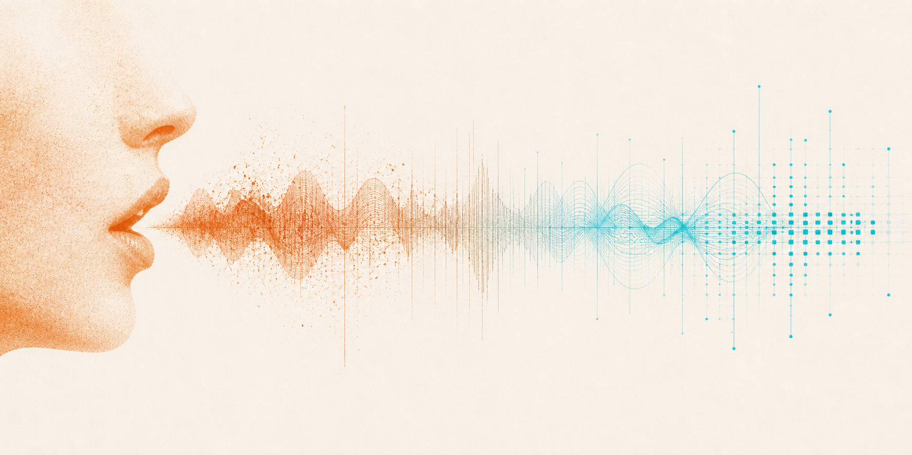
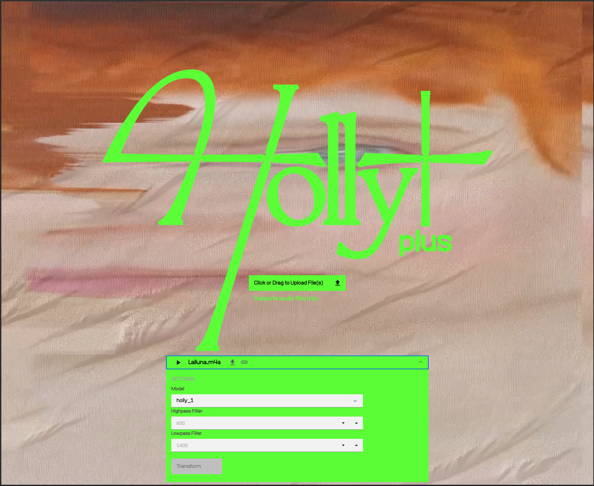

La veu
Procés
El punt de partida era clar: gravar la meva veu i transformar-la amb Holly+. El que no era clar era com.
El primer intent ha estat gravar-me llegint la pregunta central del projecte: "Quan creem amb IA, qui fa el traç?". La gravació en si sonava bé, però en pujar-la a Holly+ el resultat era molt sorollós i artificial, no en el sentit expressiu sinó en el sentit tècnic. He provat d'ajustar els filtres de l'eina (highpass i lowpass) fins a trobar una configuració que reduís els artefactes, però el resultat seguia sonant com una veu dins d'una caixa, distant i desdibuixada.
He decidit canviar d'enfocament i provar amb veu cantada, que és per al que Holly+ està principalment pensada. He triat "La lluna, la pruna", una cançó tradicional catalana de domini públic, senzilla i de melodia clara. Holly+ no accepta fragments llargs, de manera que finalment he gravat només l'inici de la cançó: "La lluna, la pruna". Amb els ajustos per defecte de l'eina, el resultat ha estat molt més net que amb la veu parlada, tot i que sonava clarament robòtic i sintètic.
He decidit quedar-me amb aquest resultat i pujar també la gravació original, perquè escoltar els dos arxius junts fa visible la transformació de manera directa: la mateixa melodia, el mateix ritme, però una veu que ja no és la meva.

Resultat

Veu original
Veu transformada amb Holly+
Reflexió
Escoltar la meva veu transformada ha estat una experiència estranya. El resultat és reconeixiblement "cantat" — manté el ritme i l'entonació de la meva gravació, però el timbre és completament diferent. No és la meva veu. Tampoc és exactament la veu de Holly Herndon. És una tercera cosa que no pertany del tot a ningú.
El procés ha revelat una limitació important de l'eina: Holly+ funciona molt millor amb veu cantada que amb veu parlada, i millor amb fragments amb context melòdic suficient que amb fragments molt curts. Això ha condicionat l'experiment d'una manera que no havia previst, i ha obligat a adaptar la idea inicial. Paradoxalment, aquesta adaptació ha fet l'experiment més interessant: el resultat no és el que havia imaginat, i precisament per això diu alguna cosa sobre com funciona la IA.
La pregunta "si una màquina canta amb la meva veu, qui canta?" té ara una resposta sonora concreta: canta una cosa que ja no és del tot humana ni del tot sintètica. I aquesta ambigüitat és exactament el que el projecte vol explorar.
Si una màquina canta amb la meva veu, qui canta?